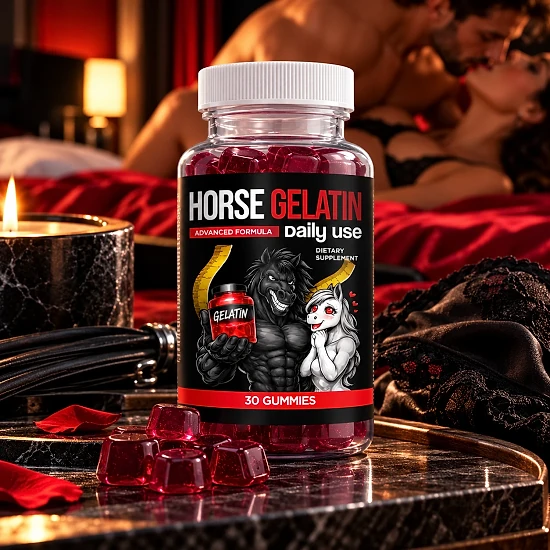
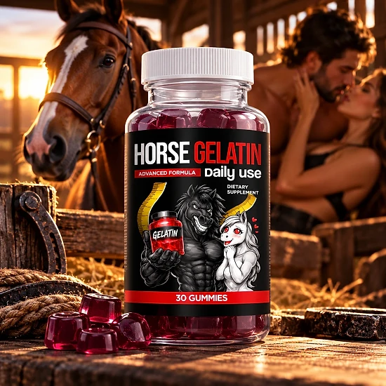
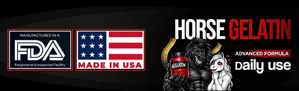

What Is Horse Gelatin And How Does It Work?
Horse Gelatin is a daily dietary supplement in gummy form, labeled "Advanced Formula – Daily Use". According to the official website, it is a daily wellness formula designed to support an active lifestyle, made for adults who want a convenient supplement that fits easily into their routine.
Each gummy combines vitamins, a mineral, amino acids, and botanical extracts. The Supplement Facts panel published on the official website lists Vitamin B3 (Niacin), Vitamin B6, Zinc, L-Carnitine, L-Citrulline, and Grape Seed Extract, plus a 200 mg proprietary blend of Panax Ginseng, Maca Root, and Rhodiola extracts.
How is it meant to work? The brand does not promise a quick fix. Instead, it presents Horse Gelatin as a simple daily habit: one gummy a day, every day, as part of a healthy routine. The idea is that steady, consistent use of a balanced formula is easier to keep up than a complicated regimen.
The ingredients are familiar in men's wellness formulas. B-vitamins and Zinc take part in normal energy metabolism, L-Citrulline and Grape Seed Extract are often chosen for their link to healthy circulation, and Ginseng, Maca, and Rhodiola have a long tradition of use for stamina, vitality, and coping with everyday stress.
The official website is careful about results. Its FAQ says that individual experiences vary and that dietary supplements do not produce identical outcomes for every person, so no timeline is promised.
Each bottle contains 30 gummies, a one-month supply at one gummy a day. The product is sold through JVZoo, ships only within the United States, and is not intended for anyone under 18.
Horse Gelatin is a dietary supplement. It is not intended to diagnose, treat, cure, or prevent any disease, and it is not a substitute for medical advice, diagnosis, or treatment.
Horse Gelatin Ingredients
The official website publishes the full Supplement Facts panel. Each gummy contains:
L-Citrulline (35 mg): an amino acid often used in performance formulas that may help support healthy circulation.
Vitamin B3 as Niacin (25 mg) and Vitamin B6 (2 mg): B-vitamins that contribute to normal energy metabolism.
L-Carnitine (25 mg): a nutrient involved in how the body turns fat into energy.
Grape Seed Extract 20:1 (25 mg): a source of antioxidants that may support healthy circulation.
Zinc as Zinc Citrate (1.5 mg): a mineral that supports normal immune function and male health.
Proprietary Blend (200 mg): Panax Ginseng, Maca Root, and Rhodiola extracts (20:1), botanicals traditionally used for energy and vitality.
Each gummy also provides 10 calories, 3 g of carbohydrate, and 2 g of added sugars. The other ingredients are corn syrup, sugar, water, pectin, natural color and flavor, and citric acid. Because the three botanicals share one blend, their individual amounts are not disclosed. The complete label artwork is shown on the official website, so you can review every detail before use.
Horse Gelatin Side Effects
The official website does not list specific side effects for Horse Gelatin. The formula is built on vitamins, a mineral, amino acids, and botanical extracts that are common in daily supplements, and the serving is a single gummy a day.
The website does give clear cautions. Talk to your healthcare professional before use, especially if you are pregnant or nursing, taking medication, or have a medical condition. The product is not intended for anyone under the age of 18, and you should never exceed the recommended serving.
These cautions are worth taking seriously with this type of formula. L-Citrulline, Ginseng, and Grape Seed Extract are traditionally linked to circulation and energy, so people who take medication for blood pressure, the heart, blood thinning, or blood sugar should ask a doctor first. Niacin (Vitamin B3) can cause a brief warm, flushing feeling in some people.
Each gummy also contains 2 g of added sugars, which matters for anyone watching their sugar intake. Keep the bottle away from children, since gummies look like candy. If you notice any discomfort or unusual reaction, stop using the product and speak with a healthcare professional. Tolerance differs from person to person, so pay attention to how you feel during the first days.
Horse Gelatin Dosage
The suggested use on the official website is simple: as a dietary supplement, take one (1) gummy once a day. There are no capsules to swallow and nothing to measure or mix. Since every bottle holds 30 gummies, one bottle lasts about a month.
The brand describes this as an "easy to remember, easy to take" routine. A good approach is to take your gummy at the same moment every day, for example with breakfast or after lunch, so it becomes part of a habit you already have. Regular use matters more than the exact time of day.
The website states plainly: do not exceed the recommended serving. Taking more gummies will not speed anything up, and because they taste like a treat, store them where children cannot reach them.
As for results, the official FAQ says individual experiences vary, so there is no fixed date to expect a change. Give the routine time and be consistent.
Horse Gelatin works best alongside healthy habits such as balanced meals, regular exercise, enough sleep, and good hydration. It is a supplement, not a replacement for a healthy lifestyle or medical care. If you take medication or have a medical condition, ask your healthcare provider before starting. Keep the bottle closed and store it in a cool, dry place.
Horse Gelatin – Refund Policy
According to the official website, Horse Gelatin comes with a 30-Day Money Back Guarantee, "subject to our refund policy terms". The brand invites buyers to try the product with confidence while following that refund policy.
Who processes the order: the official website names JVZoo as the retailer of the product, so the purchase, the receipt, and the refund request are handled through JVZoo. Keep the confirmation email you receive after ordering, because it contains your transaction details.
How to ask for a refund: contact support within the 30 days through the details on your JVZoo receipt or the help options of the JVZoo platform, and include your order information. Sending the request early leaves time for any follow-up questions.
What is not stated: the sales page does not list a support email, a phone number, or a return address, and it does not explain whether bottles must be sent back or who pays for return shipping. Ask support about these points before mailing anything.
Note on the guarantee period: some promotional images mention a 60-day guarantee, but the official sales page and its FAQ both say 30 days. Count on the 30 days stated on the official website.
Read the refund terms on the official website before ordering, and note the purchase date so you do not miss the deadline.
Horse Gelatin – Where To Buy
Horse Gelatin is sold through its official website, and orders are processed by JVZoo, the retailer named on the page. The official website does not point buyers to Amazon, eBay, Walmart, or any other marketplace, and shipping is available only within the United States.
Several look-alike pages online use similar names, such as "Horse Peak", and bottles from unknown sellers may look the same without any way to confirm where they came from or how they were stored. That raises real concerns about quality and safety, and purchases made elsewhere may not be covered by the 30-Day Money Back Guarantee.
That is why most buyers prefer to order Horse Gelatin directly from the official website. Going to the source means getting the authentic original product and keeping access to the guarantee.
Before completing your order, make sure you are on the official Horse Gelatin website to avoid counterfeit products. A quick look at the address bar takes only a moment and helps protect your order.
To ensure you’re getting the authentic product, most users choose to visit the official website.
Is Horse Gelatin A Scam?
Based on the official website, Horse Gelatin does not appear to be a scam. It is a real dietary supplement in gummy form, sold through JVZoo, an established online retailer, and designed to support daily wellness and an active lifestyle with regular use.
One clear point in its favor is transparency: the website shows the complete Supplement Facts panel with the amount of almost every ingredient, the other ingredients, the suggested use, and safety cautions. It also avoids big promises and says that individual experiences vary.
There are limits to keep in mind. Ginseng, Maca, and Rhodiola share a proprietary blend, so their individual doses are not disclosed. The sales page names no company, support email, phone number, or address, and the page title mentions "30 Capsules" while the label and the FAQ describe 30 gummies.
The guarantee period also differs between sources: promotional images mention 60 days, while the official page and its FAQ say 30 days. Rely on what the official website states, and keep your JVZoo receipt.
For adults who want a simple daily gummy to support energy, vitality, and an active routine, Horse Gelatin may be worth considering, ideally ordered from the official website and discussed with a doctor if you take medication or have a medical condition.
For those who want to verify product details or check current availability, the official Horse Gelatin website remains the safest option.

Check Availability On Official Website
